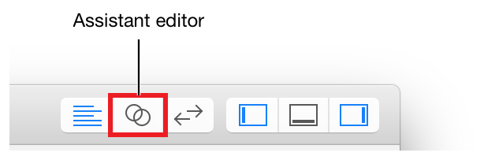
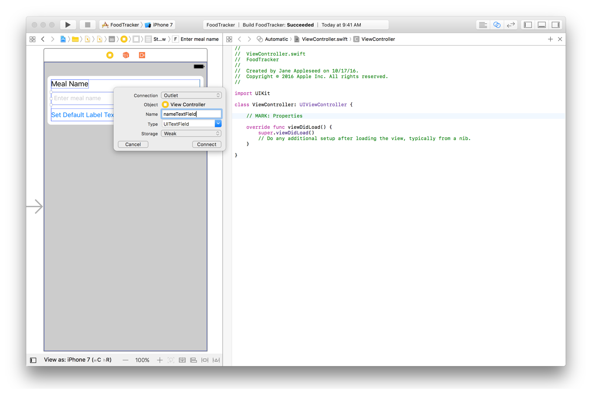
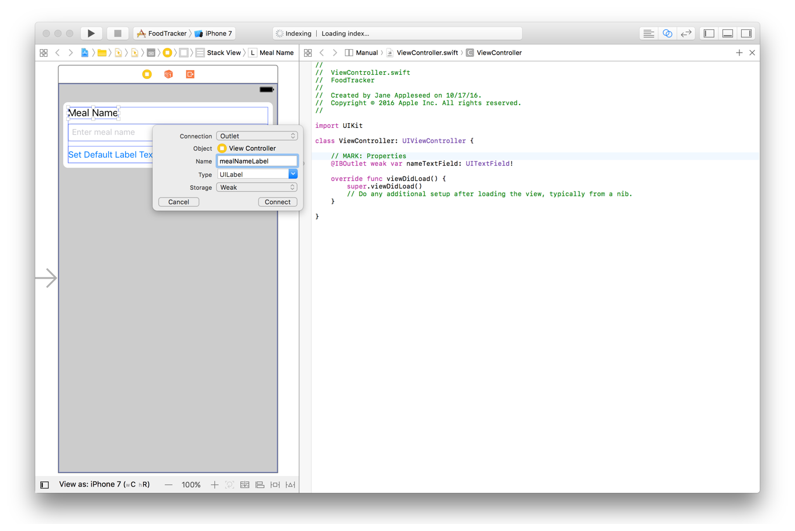
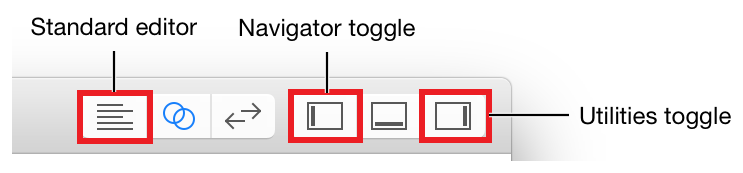

In this lesson, you’ll connect the basic user interface (UI) of the FoodTracker app to code and define some actions a user can perform in that UI. When you’re finished, your app will look something like this:
このレッスンでは、あなたはFoodTrackerアプリの基本的なユーザインターフェイス (UI)をコードと結びつけて、ユーザ（利用者）がそのUIにおいて実行できるいくつかのアクションを定義します。あなたが作業し終わった時、あなたのアプリはこのようなものに見えるでしょう：
Learning Objectives
学習する目標
At the end of the lesson, you’ll be able to:
このレッスンの終わりに、あなたが出来るようになるのは：
Explain the relationship between a scene in a storyboard and the underlying view controller
ストーリーボードの中のシーンとその下にあるビューコントローラの間の関係を明らかにする
Create outlet and action connections between UI elements in a storyboard and source code
ストーリーボードの中のUI要素とソースコードの間のアウトレットおよびアクション接続
Process user input from a text field and display the result in the UI
テキスト欄からのユーザ入力の処理とUIでのその結果の表示
Make a class conform to a protocol
クラスをプロトコルに準拠させる
Understand the delegation pattern
デリゲートパターンの理解
Follow the target-action pattern when designing app architecture
アプリ構造を設計する時に「ターゲット-アクション」パターンに従う
Connect the UI to Source Code
UIをソースコードと接続する
Elements in a storyboard are linked to source code. It’s important to understand the relationship that a storyboard has to the code you write.
ストーリーボードの中の要素は、ソースコードと繋がれます。大切なのは、この関係を理解することです、それはストーリーボードがあなたが書くコードに対して持つ関係です。
In a storyboard, a scene represents one screen of content and typically one view controller. View controllers implement your app’s behavior. A view controller manages a single content view with its hierarchy of subviews. View controllers coordinate the flow of information between the app’s data model, which encapsulates the app’s data, and the views that display that data, manage the life cycle of their content views, handle orientation changes when the device is rotated, define the navigation within your app, and implement the behavior to respond to user input. All view controller objects in iOS are of type UIViewController or one of its subclasses.
ストーリーボードにおいて、あるシーンは１つのコンテンツ画面と、大抵は１つのビューコントローラを表します。ビューコントローラは、あなたのアプリの挙動を実装します。あるビューコントローラは、１つだけのコンテンツビューをそれのサブビュー階層とともに管理します。これらビューコントローラは、アプリのデータをカプセル化するアプリのデータモデルとそのデータを表示するビューとの間の情報の流れを調整して、それらのコンテンツビューのライフサイクルを管理して、機器が回転される時に方向変更を取り扱い、あなたのアプリ内部の見て行き方を定義して、そしてユーザ入力への応答の挙動を実装します。iOSにおける全てのビューコントローラオブジェクトは、型UIViewControllerまたはそれのサブクラスの１つです。
You define the behavior of your view controllers in code by creating and implementing custom view controller subclasses. You can then create a connection between those classes and scenes in your storyboard to get the behavior you defined in code and the user interface you defined in your storyboard.
あなたは、コードにおいてあつらえのビューコントローラサブクラスを作成し実装することによって、あなたのビューコントローラの挙動を定義します。あなたはそれで、それらのクラスとあなたのストーリーボードの中のシーンの間の結合を作成することができ、あなたがコードにおいて定義した挙動とあなたがあなたのストーリーボードにおいて定義したユーザインターフェイスを得ます。
Xcode already created one such class that you looked at earlier, ViewController.swift, and connected it to the scene you’re working on in your storyboard right now. In the future, as you add more scenes, you’ll make this connection yourself in the Identity inspector. The Identity inspector lets you edit properties of an object in your storyboard related to that object’s identity, such as what class the object belongs to.
Xcodeは、すでに１つそのようなクラスを作成しました、それはあなたが前に見たViewController.swiftです、そしてちょうどそれをあなたのストーリーボードで扱っているシーンに接続しました。この先、あなたがさらにシーンを加えるたび、あなたはこの接続をあなた自身で同一性インスペクタにおいて作成することになります。同一性インスペクタは、あなたにあなたのストーリーボードのあるオブジェクトのプロパティをそのオブジェクトの同一性に関して、例えばどのクラスにそのオブジェクトが所属するかなどを、編集させます。
At runtime, your storyboard creates an instance of ViewController, your custom view controller subclass. The scene from your storyboard appears on the device’s screen, and the user interface’s behavior is defined in ViewController.swift.
実行時に、あなたのストーリーボードはViewControllerのインスタンス、あなたのあつらえのビューコントローラサブクラス、を作成します。あなたのストーリーボードからのシーンがデバイスの画面上に現れます、そしてユーザインターフェイスの挙動はViewController.swiftにおいて定義されます。
Although the scene is connected to ViewController.swift, that’s not the only connection that needs to be made. To define interaction in your app, your view controller source code needs to be able to communicate with the views in your storyboard. You do this by defining additional connections—called outlets and actions—between the views in the storyboard and the view controller source code files.
このシーンはViewController.swiftに接続されると言っても、それはこの接続だけではなく作成されることを必要とします。あなたのアプリにおける相互作用を定義するために、あなたのビューコントローラ・ソースコードは、あなたのストーリーボードの中のビューと通信可能にされる必要があります。あなたは、これを追加の接続—アウトレットおよびアクションと呼ばれるもの—をストーリーボードの中のビューとビューコントローラ・ソースコードファイルとの間に定義することによって行います。
Create Outlets for UI Elements
UI要素のアウトレットを作成する
Outlets provide a way to reference interface objects—the objects you added to your storyboard—from source code files. To create an outlet, Control-drag from a particular object in your storyboard to a view controller file. This operation creates a property for the object in your view controller file, which lets you access and manipulate that object from code at runtime.
アウトレットは、インターフェイスオブジェクト—あなたがストーリーボードに加えたオブジェクト—に、ソースコードファイルから言及する方法を提供します。アウトレットを作成するには、あなたのストーリーボードの特定のオブジェクトからビューコントローラファイルへとコントロール-ドラッグします。この行動は、あなたのビューコントローラファイルの中にそのオブジェクトのためのプロパティを作成します、それはあなたにそのオブジェクトを実行時にコードからアクセスおよび操作させます。
You’ll need to create outlets for the text field and label in your user interface to be able to reference them.
あなたが必要なのは、あなたのユーザインターフェイスの中のテキスト欄とラベルに対するアウトレットを作成して、それらが参照されることができるようにすることです。
To connect the text field to the ViewController.swift code
テキスト欄をViewController.swiftコードと接続するには
Open your storyboard, Main.storyboard.
あなたのストーリーボード、Main.storyboardを開きます。
Click the Assistant button in the Xcode toolbar near the top right corner of Xcode to open the assistant editor.
XcodeツールバーのAssistantボタンをXcodeの一番上右隅でクリックして、アシスタントエディタを開きます。

If you want more space to work, collapse the project navigator and utility area by clicking the Navigator and Utilities buttons in the Xcode toolbar.
あなたがもっと場所を必要とするならば、プロジェクトナビゲータとユーティリティ区画をNavigatorとUtilitiesボタンをXcodeツールバーにおいてクリックすることで折り畳んでください。
In the editor selector bar, which appears at the top of the assistant editor, change the assistant editor from Preview to Automatic > ViewController.swift.
アシスタントエディタの一番上にある、エディタ選択バーにおいて、アシスタントエディタをPreviewからAutomatic > ViewController.swiftに変更してください。
ViewController.swift displays in the editor on the right.
ViewController.swiftは、エディタの右に表示されます。
In ViewController.swift, find the class line, which should look like this:
ViewController.swiftにおいて、class行を見つけたください、それはこのように見えるはずです：
classViewController: UIViewController {
Below the class line, add the following:
class行の下に、以下を加えてください：
//MARK: Properties
You just added a comment to your source code. Recall that a comment is a piece of text in a source code file that doesn’t get compiled as part of the program but provides context or useful information about individual pieces of code.
あなたは、ただ単にコメントをあなたのソースコードに加えただけです。コメントがソースコードファイル中の一片のテキストであることを思い出してください、それはプログラムの一部としてコンパイルされませんがコードの個々の部分について前後関係や役立つ情報を提供します。
A comment that begins with the characters //MARK: is a special type of comment that’s used to organize your code and to help you (and anybody else who reads your code) navigate through it. You’ll see this in action later. Specifically, the comment you added indicates that this is the section of your code that lists properties.
文字//MARK:で始まるコメントは、コメントの特別な種類で、それが使われるのはあなたのコードを系統立てるためやあなたが（そしてあなたのコードを読む他の誰でも）それを見ていく助けとするためです。あなたは、これを後でアクションで見るでしょう。具体的には、あなたが加えたコメントが示すのは、これがあなたのコードのプロパティをリストする部分だということです。
In your storyboard, select the text field.
あなたのストーリーボードにおいて、テキスト欄を選択してください。
Control-drag from the text field on your canvas to the code display in the editor on the right, stopping the drag at the line below the comment you just added in ViewController.swift.
あなたのキャンバス上のテキスト欄から右のエディタのコード表示までコントロール-ドラッグして、あなたがまさにViewController.swiftに加えたコメントの下の行でドラッグをやめます。
In the dialog that appears, for Name, type nameTextField.
現れたダイアログで、Nameに対して、nameTextFieldをタイプします。
Leave the rest of the options as they are. Your dialog should look like this:
残りのオプションはそれらのままにしておきます。あなたのダイアログはこのように見えるはずです：

Click Connect.
Connectをクリックしてください。
Xcode adds the necessary code to ViewController.swift to store a reference to the text field and configures the storyboard to set up that connection.
Xcodeは、必要なコードをViewController.swiftに加えることでテキスト欄への参照を保管します、そしてストーリーボードを修正することでこの接続を確立します。
@IBOutletweakvarnameTextField: UITextField!
Take a minute to understand what’s happening in this line of code.
少し時間をとってコードのこの行で何が起こっているか理解しましょう。
The IBOutlet attribute tells Xcode that you can connect to the nameTextField property from Interface Builder (which is why the attribute has the IB prefix). The weak keyword indicates that the reference does not prevent the system from deallocating the referenced object. Weak references help prevent reference cycles; however, to keep the object alive and in memory you need to make sure some other part of your app has a strong reference to the object. In this case, it’s the text field’s superview. A superview maintains a strong reference to all of its subviews. As long as the superview remains alive and in memory, all of the subviews remain alive as well. Similarly, the view controller has a strong reference to its content view—keeping the entire view hierarchy alive and in memory.
IBOutlet属性がXcodeに教えるのは、あなたがnameTextFieldプロパティにインターフェイスビルダーから接続できるということです（それはその属性がIB接頭辞を持つことが理由です）。weakキーワードは、参照されたオブジェクトをシステムがディアロケートするのを、その参照は妨げないということを指し示します。弱い（weak）参照は参照循環を防ぐ助けとなります；しかしながら、オブジェクトを生存させてメモリに保つためにはあなたはあなたのアプリの何か他の部分がそのオブジェクトに対して強い参照を持つことを確かなものにする必要があります。この場合、それはテキスト欄の持つスーパービューです。スーパービューは、すべてのそれのサブビューに対する強い参照を維持します。スーパービューが生存してメモリにとどまる限り、すべてのサブビューは同様に生存したままでいます。同じように、ビューコントローラは強い参照をそれのコンテンツビューに対して持ちます — ビュー階層全体を生存させメモリに保っています。
The rest of the declaration defines an implicitly unwrapped optional variable of type UITextField named nameTextField. Pay careful attention to the exclamation point at the end of the type declaration. This exclamation point indicates that the type is an implicitly unwrapped optional, which is an optional type that will always have a value after it is first set. When you access an implicitly unwrapped optional, the system assumes it has a valid value and automatically unwraps it for you. Note that this causes the app to terminate if the variable’s value has not yet been set.
この宣言の残りは、暗黙的にアンラップされるオプショナルで型UITextFieldのnameTextFieldと名付けられる変数を定義します。この型宣言の終わりの感嘆符をおろそかにしないでください。この感嘆符は、その型が暗黙的にアンラップされるオプショナルであることを指し示します、それはオプショナル型で、常にある値をそれが最初に設定された後に持つことになります。あなたが暗黙的にアンラップされるオプショナルにアクセスする時、システムはそれが有効な値を持つと決めてかかり、自動的にそれをあなたの代わりにアンラップします。その変数の値がまだ設定されていないならばこれはアプリの終了を引き起こすことに注意してください。
When a view controller is loaded from a storyboard, the system instantiates the view hierarchy and assigns the appropriate values to all the view controller’s outlets. By the time the view controller’s viewDidLoad() method is called, the system has assigned valid values to all of the controller’s outlets, and you can safely access their contents.
あるビューコントローラがストーリーボードからロードされる時、システムはビュー階層をインスタンス化して適切な値をビューコントローラの持つアウトレット全てに割り当てます。ビューコントローラの持つviewDidLoad()メソッドが呼び出されるまでに、システムは有効な値をコントローラの持つアウトレットの全てに割り当て終えます、そしてあなたは安全にそれらのコンテンツにアクセスできます。
Now, connect the label to your code in the same way you connected the text field.
今度は、あなたがテキスト欄を接続したのと同じ方法でラベルをあなたのコードにつないでください。
To connect the label to the ViewController.swift code
ラベルをViewController.swiftコードに接続するには
In your storyboard, select the label.
あなたのストーリーボードにおいて、ラベルを選択してください。
Control-drag from the label on your canvas to the code display in the editor on the right, stopping the drag at the line just below your nameTextField property in ViewController.swift.
あなたのキャンバス上のラベルから右のエディタのコード表示までコントロール-ドラッグして、あなたのViewController.swiftの中のnameTextFieldプロパティのすぐ下の行でドラッグをやめます。
In the dialog that appears, for Name, type mealNameLabel.
現れるダイアログにおいて、Nameに対して、mealNameLabelをタイプします。
Leave the rest of the options as they are. Your dialog should look like this:
残りのオプションはそれらのままにしておきます。あなたのダイアログはこのように見えるはずです：

Click Connect.
Connectをクリックしてください。
Again, Xcode adds the necessary code to ViewController.swift to store a reference to the label and configures the storyboard to set up that connection. This outlet is similar to the text field, except for its name and its type (which is UILabel, to match the type of object that’s in the storyboard).
再び、Xcodeは必要なコードをViewController.swiftに加えることでラベルへの参照を保管します、そしてストーリーボードを修正することでこの接続を確立します。このアウトレットはテキスト欄と似ています、その名前とその型（それはUILabelです、ストーリーボードの中にあるオブジェクトの型に合わせて）を除いては。
@IBOutletweakvarmealNameLabel: UILabel!
You only need an outlet to an interface object if you plan to either access a value from the interface object or modify the interface object in your code. In this case, you need to set the text field’s delegate property and set the label’s text property. You won’t be modifying the button, so there’s no reason to create an outlet for it.
あなたはあるインターフェイスオブジェクトに対するアウトレットを必要とするだけです、もしあなたがある値にインターフェイスオブジェクトからアクセスするかインターフェイスオブジェクトをあなたのコードにおいて修正するかどちらかを行うつもりならば。この場合には、あなたはテキスト欄のdelegateプロパティを設定する、そしてラベルのtextプロパティを設定する必要があります。あなたはボタンを修正することはしません、それでそれに対してアウトレットを作成する理由はありません。
Outlets let you refer to your interface elements in code, but you still need a way to respond whenever the user interacts with the elements. That’s where actions come in.
アウトレットは、あなたにコードにおいてあなたのインターフェイス要素を参照させます、しかしまだあなたにはユーザがそれら要素と相互作用するたびに応答する方法が必要です。そこでアクションの出番です。
Define an Action to Perform
実行されるアクション（動作）の定義
iOS apps are based on event-driven programming. That is, the flow of the app is determined by events: system events and user actions. The user performs actions in the interface that trigger events in the app. These events result in the execution of the app’s logic and manipulation of its data. The app’s response to user action is then reflected back in the user interface. Because the user, rather than the developer, is in control of when certain pieces of the app code get executed, you want to identify exactly which actions a user can perform and what happens in response to those actions.
iOSアプリは、イベント駆動プログラミングに基づきます。すなわち、アプリの動作の流れを決定するのはイベント：システムイベントおよびユーザアクションです。ユーザは、インターフェイスにおいていろいろな行動を行い、それはアプリにおいていろいろなイベントを引き起こします（ユーザアクション・イベント）。それらのイベントは、アプリのロジックの実行とそれのデータの操作に終わります。ユーザアクションへのアプリの応答は、それからユーザインターフェイスに返され反映されます。開発者ではなくユーザがいつアプリのコードの特定の部分が実行されるようにするかを制御するので、あなたは、厳密にどのアクションがユーザに実行可能かそして何がそれらのアクションへの応答において起こるかを明確にする必要があります。
An action (or an action method) is a piece of code that’s linked to an event that can occur in your app. When that event takes place, the system execute’s the action’s code. You can define an action method to accomplish anything from manipulating a piece of data to updating the user interface. You use actions to drive the flow of your app in response to user or system events.
あるアクション（またはアクションメソッド）は、あるコード断片です、それはあなたのアプリで発生可能なイベントと連結されます。そのイベントが起こるときに、システムはそのアクションの持つコードを実行します。あなたは、アクションメソッドを定義することで、あるデータ断片を操作することからユーザインターフェイスを更新することまでどんなことでも成し遂げます。あなたはアクションを使って、あなたのアプリの流れ（フロー）をユーザやシステムのイベントに応じて動かします（駆動します）。
You create an action the same way you create an outlet: Control-drag from a particular object in your storyboard to a view controller file. This operation creates a method in your view controller file that gets triggered when a user interacts with the object that the action method is attached to.
あなたは、アクションをあなたがアウトレットを作成したのと同じ方法で作成します：あなたのストーリーボードの中の特定のオブジェクトからビューコントローラファイルまでコントロールドラッグしてください。この操作は、あなたのビューコントローラファイルの中にひとつのメソッドを作成し、それはそのアクションメソッドが取り付けられたオブジェクトとユーザが相互作用するときに作動することになります。
Start by creating a simple action that sets the label to Default Text whenever the user taps the Set Default Text button. (The code to set the label to the text in the text field is a bit more involved, so you’ll write that in the Process User Input section.)
簡単なアクションを作成することで始めましょう、それはユーザがSet Default TextボタンをタップするたびごとにラベルをDefault Textに設定します。（ラベルをテキスト欄の中のテキストに設定するコードは、もう少し込み入っています、それであなたはユーザ入力処理の節でそれを書くことになります。）
To create a setDefaultLabelText action in the ViewController.swift code
setDefaultLabelTextアクションをViewController.swiftコードの中に作成するには
In ViewController.swift, just above the last curly brace (}), add the following:
ViewController.swiftにおいて、最後の波括弧（}）のすぐ上に、以下を加えます：
//MARK: Actions
This comment indicates that this is the section of your code that lists actions.
このコメントが示すのは、これがあなたのコードのアクションをリストする部分だということです。
In your storyboard, select the Set Default Label Text button.
ストーリーボードにおいて、Set Default Label Textボタンを選択してください。
Control-drag from the Set Default Label Text button on your canvas to the code display in the editor on the right, stopping the drag at the line below the comment you just added in ViewController.swift.
あなたのキャンバス上のSet Default Label Textボタンから右のエディタのコード表示までコントロール-ドラッグして、あなたがまさにViewController.swiftに加えたコメントの下の行でドラッグをやめます。
In the dialog that appears, for Connection select Action.
現れたダイアログで、Connectionに対してActionを選択します。
For Name, type setDefaultLabelText.
Nameに対して、setDefaultLabelTextをタイプします。
For Type, select UIButton.
Typeに対して、UIButtonを選択します。
You may have noticed that the value of the Type field defaults to AnyObject. In Swift, AnyObject is a type used to describe an object that can belong to any class. Specifying the type of this action method to be UIButton means that only button objects can connect to this action. Although this isn’t significant for the action you’re creating right now, it’s important to remember for later.
あなたは、Type欄の値が初期状態でAnyObjectになっているのに気づくかもしれません。Swiftでは、AnyObjectはどんなクラスにも属することができるオブジェクトを記述するために使われる型です。このアクションメソッドの型をUIButtonに指定することは、ボタンオブジェクトだけがこのアクションに接続できるのを意味します。これは今あなたが作成しているアクションにとって重大な意味を持ちませんが、それは重要なので後のために覚えておいてください。
Leave the rest of the options as they are. Your dialog should look like this:
残りのオプションはそれらのままにしておきます。あなたのダイアログはこのように見えるはずです：
Click Connect.
Connectをクリックしてください。
Xcode adds the necessary code to ViewController.swift to set up the action method.
Xcodeは、必要なコードをViewController.swiftに加えることでアクションメソッドを設定します。
The sender parameter refers to the object that was responsible for triggering the action—in this case, a button. The IBAction attribute indicates that the method is an action that you can connect to from your storyboard in Interface Builder. The rest of the declaration declares a method by the name of setDefaultLabelText(_:).
senderパラメーターは、このアクションを引き起こす原因となったオブジェクトを参照します—この場合、ボタンです。IBAction属性が示すのは、このメソッドは、インターフェイスビルダーの中のあなたのストーリーボードからどこかへあなたが接続できるアクションだということです。宣言の残りは、setDefaultLabelText(_:)の名前でメソッドを宣言します。
Right now, the method declaration is empty. The code to reset the value of the label is quite simple.
今は、このメソッド宣言は空です。ラベルの値をリセットするコードは、ごく簡単です。
To implement the label reset action in the ViewController code
ラベルリセットアクションをViewControllerコードの中に実装するには
In ViewController.swift, find the setDefaultLabelText action method you just added.
ViewController.swiftにおいて、あなたが加えたばかりのsetDefaultLabelTextアクションメソッドを見つけてください。
In the method implementation, between the curly braces ({}), add this line of code:
そのメソッド実装において、波括弧（{}）の間に、このコード行を加えてください：
mealNameLabel.text = "Default Text"
As you might guess, this code sets the label’s text property to Default Text.
あなたが考えたように、このコードはラベルのtextプロパティを「Default Text」に設定します。
Notice that you didn’t have to specify the type of Default Text, because Swift’s type inference can see that you’re assigning to something of type String and can infer the type correctly.
注意することは、あなたが「Default Text」の型を指定する必要がなかったことです、なぜならSwiftの型推論はあなたが型Stringの何かを割り当てているのを知ることができ、そして型を正確に推測できるからです。
iOS handles all of the redrawing code for you, so this is actually all the code you need to write for now. Your setDefaultLabelText(_:) action method should look like this:
iOSは、再描画コードのすべてをあなたの代わりに取り扱います、それでこれが実際さしあたってあなたが書く必要のあるコードのすべてです。あなたのsetDefaultLabelText(_:)アクションメソッドは、このように見えるはずです：
Checkpoint: Test your changes by running the simulator. When you click the Set Default Label Text button, your setDefaultLabelText(_:) method is called, and the mealNameLabel object’s text value changes from Meal Name (the value set in your storyboard) to Default Text (the value set by the action). You should see the change in your user interface.
確認点：あなたの変更をシミュレータを実行することでテストしてください。あなたがSet Default Label Textボタンをクリックするとき、あなたのsetDefaultLabelText(_:)メソッドが呼び出されます、そしてmealNameLabelオブジェクトの持つtext値はMeal Name（あなたのストーリーボードにおいて設定された値）からDefault Text（アクションによって設定された値）に変わります。あなたは、あなたのユーザインターフェイスにおいてこの変化を見るはずです。
While changing the meal’s name to “Default Text” isn’t particularly useful, it does illustrate an important point. The behavior you just implemented is an example of the target-action pattern in iOS app design. Target-action is a design pattern where one object sends a message to another object when a specific event occurs.
食事の名前を「Default Text」へ変更することは特に役に立つことではないけれども、それはある重要な点を例証します。あなたがたった今実装した挙動は、iOSアプリ設計におけるターゲットアクションパターンの１例です。「ターゲットアクション」は、ひとつデザインパターンで、そこにおいては一方のオブジェクトはあるメッセージを別のオブジェクトへと特定のイベントが起こる時に送り出します。
In this case:
この場合には：
The event is the user tapping the Set Default Text button.
イベント（出来事）は、ユーザがSet Default Textボタンをタップすることです。
The action is setDefaultLabelText(_).
アクション（動作）は、setDefaultLabelText(_)です。
The target is ViewController (where the action method is defined).
ターゲット（目標）は、ViewControllerです（ここでアクションメソッドが定義されます）。
The sender is the Set Default Label Text button.
センダー（送り手）は、Set Default Label Textボタンです。
The system sends the message by calling the action method on the target and passing in the sender object. The sender is usually a control—such as a button, slider, or switch—that can trigger an event in response to user interaction such as a tap, drag, or value change. This pattern is extremely common in iOS app programming, and you’ll be seeing much more of it throughout the lessons.
システムはメッセージを、アクションメソッドをターゲット上で呼び出してセンダーオブジェクトに渡すことによって送ります。センダーは大抵はあるコントロールです — 例えばボタン、スライダ、またはスイッチなど — それはあるイベントをユーザとのやりとり、例えばタップ、ドラッグ、または値の変更などに対する応答において引き起こすことができます。このパターンは、iOSアプリプログラミングにおいて非常にありふれたものです、そしてあなたはこれらのレッスンを通してもっとたくさん見ることになるでしょう。
Process User Input
ユーザ入力処理
At this point, users can reset the meal name label to a default value, but you really want to let users enter their own meal names using the text field. To keep things simple, you’ll update the mealNameLabel object’s text value whenever the user enters text into the text field and taps Return.
この時点で、ユーザは食事名を省略時の値にリセットできます、しかしあなたが本当に望むのはユーザに彼ら自身の食事名をテキスト欄を使って入力されることです。物事を単純に保つため、あなたはmealNameLabelオブジェクトの持つtext値を、ユーザがテキストをテキスト欄に入力してReturnをタップするごとに更新するでしょう。
When you work with accepting user input from a text field, you need some help from a text field delegate. A delegate is an object that acts on behalf of, or in coordination with, another object. The delegating object—in this case, the text field—keeps a reference to the other object—the delegate—and at the appropriate time, the delegating object sends a message to the delegate. The message tells the delegate about an event that the delegating object is about to handle or has just handled. The delegate may respond by for example, updating the appearance or state of itself or of other objects in the app, or returning a value that affects how an impending event is handled.
あなたがテキスト欄からのユーザ入力の受け取りを扱うとき、あなたは、テキスト欄の委任先からの助けを必要とします。委任先は、別のオブジェクトの代わりを務める、またはそれと連携して役割を果たすオブジェクトです。委任しているオブジェクト—この場合、テキスト欄—は、他のオブジェクト—委任先—への参照を保有します、そして適切なときに、委任しているオブジェクトはメッセージを委任先に送ります。このメッセージは、委任しているオブジェクトがまさに取り扱おうとしているまたはちょうど取り扱い終えたイベントについて委任先に教えます。委任先は、例えば、それ自身やアプリ中の他のオブジェクトの外観や状態を更新すること、またはすぐに起ころうとしているイベントが取り扱われる方法に影響を及ぼす値を返すことでで応答するかもしれません。
A text field’s delegate communicates with the text field while the user is editing the text, and knows when important events occur—such as when a user starts or stops editing text. The delegate can use this information to save or clear data at the right time, dismiss the keyboard, and so on.
テキスト欄の持つ委任先は、ユーザがテキストを編集している間テキスト欄と通信します、それで重要なイベントが起こる時がわかります — 例えばユーザがテキスト編集を始めるまたは止める時など。委任先は、この情報を使ってデータを保存したり消去したりがちょうど良いとき、キーボードを片付けたときなどに行えます。
Any object can serve as a delegate for another object as long as it conforms to the appropriate protocol. The protocol that defines a text field’s delegate is called UITextFieldDelegate. It is very common to make a view controller the delegate for objects that it manages. In this case, you’ll make your ViewController instance the text field’s delegate.
どんなオブジェクトでも、それが適切なプロトコルに準拠しさえすれば、他のオブジェクトの委任先としての務めを果たすことができます。テキスト欄の委任先を定義するプロトコルは、UITextFieldDelegateと呼ばれます。一番ありふれているのは、ビューコントローラをそれが管理するオブジェクトのためのデリゲートにすることです。この場合には、あなたはあなたのViewControllerインスタンスをテキスト欄のデリゲートにするでしょう。
First, ViewController needs to adopt the UITextFieldDelegate protocol. You adopt a protocol by listing it as part of the class declaration line.
まず、ViewControllerに必要なのはUITextFieldDelegateプロトコルに準拠することです。あなたは、あるプロトコルをクラス定義行の一部としてそれをリストすることによって採用します。
To adopt the UITextFieldDelegate protocol
UITextFieldDelegateプロトコルを採用するには
If the assistant editor is open, return to the standard editor by clicking the Standard button.
アシスタントエディタが開かれているならば、Standardボタンをチェックすることで標準エディタに戻ってください。

Expand the project navigator and utility area by clicking the Navigator and Utilities buttons in the Xcode toolbar.
プロジェクトナビゲータとユーティリティ区画をNavigatorとUtilitiesボタンをXcodeツールバーでクリックすることで広げてください。
In the project navigator, select ViewController.swift.
プロジェクトナビゲータにおいて、ViewController.swiftを選択してください。
In ViewController.swift, find the class line, which should look like this:
ViewController.swiftにおいて、class行を見つけたください、それはこのように見えるはずです：
classViewController: UIViewController {
After UIViewController, add a comma (,) and UITextFieldDelegate to adopt the protocol.
UIViewControllerの後に、コンマ（,）とUITextFieldDelegateを加えてそのプロトコルに準拠してください。
By adopting the UITextFieldDelegate protocol, you tell the compiler that the ViewController class can act as a valid text field delegate. This means you can implement the protocol’s methods to handle text input, and you can assign instances of the ViewController class as the delegate of the text field.
UITextFieldDelegateプロトコルを採用することによって、あなたはコンパイラにViewControllerクラスが有効なテキスト欄委任先としての役割を果たすことができると教えます。これはあなたがプロトコルの持つメソッドを実装することでテキスト入力を取り扱うことができるのを意味します、そしてあなたはViewControllerクラスのインスタンスをテキスト欄の委任先として任命できます。
To set the ViewController object as the delegate of its nameTextField property
ViewControllerオブジェクトをそれのnameTextFieldプロパティの委任先として設定するには
In ViewController.swift, find the viewDidLoad() method, which should look like this:
ViewController.swiftにおいて、viewDidLoad()メソッドを見つけてください、それはこのように見えるはずです：
overridefuncviewDidLoad() {
super.viewDidLoad()
// Do any additional setup after loading the view, typically from a nib. （何らかの追加の準備をビューを、大抵はnibからロードした後で行います）
}
The template implementation of this method includes a comment. You don’t need this comment in your method implementation, so go ahead and delete it.
このメソッドのひな形実装はコメントを１つ含みます。あなたはこのコメントをあなたのメソッド実装において必要としません、それで先へ進んでそれは削除します。
Below the super.viewDidLoad() line, add a blank line and the following:
super.viewDidLoad()行の下で、空白行を１つと以下を加えてください：
// Handle the text field’s user input through delegate callbacks. （テキスト欄のユーザ入力を委任先コールバックを経由して取り扱います。）
nameTextField.delegate = self
The self refers to the ViewController class, because it’s referenced inside the scope of the ViewController class definition.
このselfはViewControllerクラスを参照します、なぜならそれがViewControllerクラス定義のスコープないが参照されるからです。
You can add your own comments to help you understand what’s happening in your code.
あなたは、あなた自身のコメントを加えて、あなたのコードにおいて何が起こっているかあなたが理解する助けとしてください。
Your viewDidLoad() method should look like this:
あなたのviewDidLoad()メソッドはこのように見えるはずです：
overridefuncviewDidLoad() {
super.viewDidLoad()
// Handle the text field’s user input through delegate callbacks. （テキスト欄のユーザ入力を委任先コールバックを経由して取り扱います。）
nameTextField.delegate = self
}
When a ViewController instance is loaded, it sets itself as the delegate of its nameTextField property.
ViewControllerインタンスがロードされる時、それはそれ自身をそれのnameTextFieldプロパティの委任先として設定します。
The UITextFieldDelegate protocol defines eight optional methods. Just implement the ones you need to get the behaviors you desire. For now, you’ll need to implement two of these methods:
UITextFieldDelegateプロトコルは、８つのオプショナルメソッドを定義します。ただあなたが必要とするものだけを実装して、あなたが望む挙動を得てください。さしあたり、あなたはそれらメソッドのうち２つを実装する必要があるでしょう：
To understand when these methods get called and what they need to do, it’s important to know how text fields respond to user events. When the user taps a text field, it automatically becomes the first responder. In an app, the first responder is an object that is first on the line for receiving many kinds of app events, including key events, motion events, and action messages, among others. In other words, many of the events generated by the user are initially routed to the first responder.
何時これらのメソッドが呼ばれるか、何をそれらは実行に必要とするのかを理解するために、重要となるのは、どうやってテキスト欄がユーザイベントに応答するのかを知ることです。ユーザがあるテキスト欄をタップする時、それは自動的にファーストレスポンダになります。あるアプリにおいて、ファーストレスポンダは、特にキーイベント、モーションイベント、そしてアクションイベントを含めた、多くの種類のアプリイベントの受け取りの列の最初のオブジェクトです。言い換えれば、ユーザによって生み出されるイベントの多くは初めにファーストレスポンダに向かいます。
As a result of the text field becoming the first responder, iOS displays the keyboard and begins an editing session for that text field. What a user types using that keyboard gets inserted into the text field.
テキスト欄がファーストレスポンダになることの結果として、iOSはキーボードを表示してそのテキスト欄のために編集セッションを始めます。ユーザがキーボードを使ってタイプすることは、テキスト欄へと挿入されます。
When a user wants to finish editing the text field, the text field needs to resign its first-responder status. Because the text field will no longer be the active object in the app, events need to get routed to a more appropriate object.
ユーザがテキスト欄の編集を終えたい時は、テキスト欄はそれのファーストレスポンダ状態をやめる必要があります。テキスト欄がもはやアプリにおいて能動的なオブジェクトでないことから、イペントはより適したオブジェクトへ向けられる必要があります。
This is where your implementation of UITextFieldDelegate methods comes in. You need to specify that the text field should resign its first-responder status when the user taps a button to end editing in the text field. You do this in the textFieldShouldReturn(_:) method, which gets called when the user taps Return (or in this case, Done) on the keyboard.
これは、UITextFieldDelegateのあなたの実装のメソッドが登場するところです。あなたが指定する必要があるのは、ユーザがあるボタンをタップした時にテキスト欄での編集を終わるためにテキスト欄がそれのファーストレスポンダ状態をやめることです。あなたがこれを行うのはtextFieldShouldReturn(_:)メソッドにおいてです、それが呼ばれるのはユーザがリターン（またはこの場合、Done）をキーボード上でタップした時です。
To implement the UITextFieldDelegate protocol method textFieldShouldReturn(_:)
UITextFieldDelegateのプロトコルメソッドのtextFieldShouldReturn(_:)を実装するには
In ViewController.swift, right above the //MARK: Actions section, add the following:
ViewController.swiftにおいて、//MARK: Actions部分のちょうど上に、以下を加えてください：
//MARK: UITextFieldDelegate
This comment is used to organize your code and to help you (and anybody else who reads your code) navigate through it.
このコメントは、あなたのコードを系統立てるために、そしてあなたが（およびあなたのコードを読む他の誰でも）それを見ていく助けとするために使われます。
You’ve added several of these comments so far. Xcode lists each of these comments as a section title in the source code file’s Functions menu, which appears if you click the name of the file at the top of the editor area. The Functions menu lets you jump to a section in your code quickly. You’ll notice the sections you denoted by //MARK: listed here. You can click on one of the section titles to jump to that section in the file.
あなたは、いくつかこれらのコメントを今までに加えました。Xcodeは、それらコメントそれぞれをソースコードファイルの持つFunctions menuにおける部門タイトルとしてリストします、それはあなたがそのファイル名をエディタ区画の最上部でクリックするならば現れます。「Functions menu」は、あなたにあなたのコードの中のあるセクションへとすばやくジャンプさせます。あなたは、ここでリストされた//MARK:によってあなたが示した部門に気づくでしょう。あなたは、部門名の１つをクリックすることでファイルのその部門へジャンプすることができます。
Below the comment, add the following method:
そのコメントの下に、以下のメソッドを加えてください：
In this method, add the following code to resign the text field’s first-responder status, and a comment to describe what the code does:
このメソッドにおいて、以下のコードをテキスト欄のファーストレンポンダ状態を破棄するために、そしてひとつのコメントをこのコードが何をするか説明するために加えてください。
// Hide the keyboard.
textField.resignFirstResponder()
Try typing the second line instead of just copying and pasting. You’ll find that code completion is one of the great time-saving features of Xcode. When Xcode brings up the list of potential completions, scroll through the list until you find the one you want and then press Return. Xcode inserts the whole line for you.
２番目の行をコピーアンドペーストするのではなくタイプすることを試みてください。あなたは、コード補完がXcodeの偉大な時間節約機能の１つであることを発見するでしょう。Xcodeが見込みのある補完のリストを提出する場合、そのリストをあなたが望むものを見つけるまでずっとスクロールして、それからリターンキーを押してください。Xcodeは、行全体をあなたの代わりに挿入します。
In this method, add the following line of code:
このメソッドにおいて、以下のコード行を加えてください：
returntrue
This method returns a Boolean value that indicates whether the system should process the press of the Return key. In this case, you always want to respond to the user pressing the Return key, so just return true.
このメソッドはブール値を返します、それはシステムがReturnキーの押下を処理すべきかどうかを指し示します。この場合には、あなたはユーザがReturnキーを押すことに常に応答したいので、単にtrueを返します。
Your textFieldShouldReturn(_:) method should look like this:
あなたのtextFieldShouldReturn(_:)メソッドはこのように見えるはずです：
The second method that you need to implement, textFieldDidEndEditing(_:), is called after the text field resigns its first-responder status. Because you resign first responder status in textFieldShouldReturn, the system calls this method just after calling textFieldShouldReturn.
あなたが実装する必要がある２つ目のメソッド、textFieldDidEndEditing(_:)は、テキスト欄がそれのファーストレスポンダ状態を破棄した後に呼ばれます。あなたはファーストレスポンダ状態をtextFieldShouldReturnにおいて放棄するので、システムはこのメソッドをtextFieldShouldReturnの呼び出しの直後に呼び出します。
The textFieldDidEndEditing(_:) method gives you a chance to read the information entered into the text field and do something with it. In your case, you’ll take the text that’s in the text field and use it to change the value of your label.
textFieldDidEndEditing(_:)メソッドがあなたに与えるのは、テキスト欄に入力された情報を読んでそれで何かをする機会です。あなたの場合には、あなたはテキスト欄の中にあるテキストをとってそれをあなたのラベルの値を変更するために使います。
To implement the UITextFieldDelegate protocol method textFieldDidEndEditing(_:)
UITextFieldDelegateのプロトコルメソッドのtextFieldDidEndEditing(_:)を実装するには
In ViewController.swift, after the textFieldShouldReturn(_:) method, add the following method:
ViewController.swiftにおいて、textFieldShouldReturn(_:)メソッドの後に、以下のメソッドを加えます：
In this method, add the following line of code:
このメソッドにおいて、以下のコード行を加えてください：
mealNameLabel.text = textField.text
That’s all you need to do to see the result. Your textFieldDidEndEditing(_:) method should look like this:
これがあなたが結果を見るために必要なすべてです。あなたのtextFieldDidEndEditing(_:)メソッドはこのように見えるはずです：
Checkpoint: Test your changes by running the simulator. You can select the text field and type text into it. When you click the Done button on the keyboard, the keyboard is dismissed and the label text changes to display the text in the text field. When you click the Set Default Label Text button, the label changes from what’s currently displayed in the label to Default Text (the value set by the action you defined earlier).
確認点：あなたの変更をシミュレータを実行することでテストしてください。あなたは、テキスト欄を選択してテキストをそれの中へとタイプすることができます。あなたがDoneボタンをキーボード上でクリックする時、キーボードは片付けられてラベルテキストは変更されてそのテキストがテキスト欄で表示されます。あなたがSet Default Label Textボタンをクリックする時、ラベルは現在ラベルに表示されるものからDefault Text（あなたが以前に定義したアクションによって設定される値）へと変わります。
Wrapping Up
まとめ
In this lesson, you’ve used the assistant editor to add outlets and actions to your source code. You’ve also added code to update the user interface as the user interacts with the controls. The project is still just a relatively simple, single scene, but you will continue to add features and increase its complexity over the remaining lessons.
このレッスンでは、あなたはアシスタントエディタを使ってアウトレットとアクションをあなたのソースコードに加えました。あなたはまたコードを追加して、ユーザがコントロールと相互作用するようにユーザインターフェイスを更新しました。このプロジェクトは、まだ比較的単純なものでしかありません、しかしあなたは機能の追加を続けていってそれの複雑さを残りのレッスンを乗り越えて増やしていくことになります。